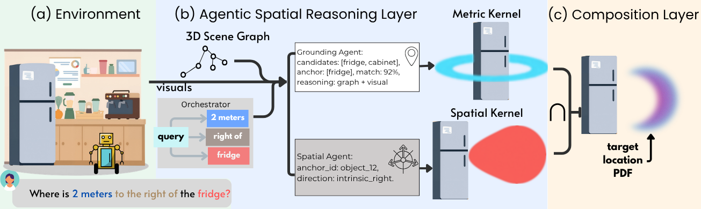

Parse the query into anchor, relation, and metric clauses.
Metric-semantic 3D goal grounding
Meanings and Measurements
Multi-Agent Probabilistic Grounding for Vision-Language Navigation
MAPG decomposes metric-semantic instructions into referent, directional, and metric components, grounds them against an online 3D scene graph, and composes continuous spatial kernels into a planner-ready goal distribution.
98 MAPG-Bench queries
41 HM3D scenes
Continuous goal distributions

01
Method
From language and observations to an executable spatial goal.
Resolve the anchor instance using scene-graph and visual evidence.
Combine semantic, directional, and metric kernels in log space.
Mask to navigable space and return the highest-density goal.

02
MAPG-Bench results
Trace-derived evaluation using one consistent adapter across stored outputs.
| Method | O-O ↓ | O-W ↓ | Angle ↓ | Obj. Sel. ↑ | Common ↑ | Completion ↑ | Anchor ↑ | Traj. ↓ |
|---|---|---|---|---|---|---|---|---|
| SpatialRGPT, VILA1.5-8B | 7.03 | 6.87 | 81.05° | 0.00 | 0.61 | 0.95 | N/A | N/A |
| GraphEQA, GPT-5.6 Luna | 4.16 | 4.30 | 87.46° | 0.04 | 0.08 | 0.27 | 0.20 | 14.96 |
| GraphEQA, Gemini 3.7 Flash | 4.51 | 4.72 | 80.77° | 0.05 | 0.52 | 0.81 | 0.40 | 12.33 |
| MAPG, GPT-5.2 | 2.45 | 2.92 | 72.93° | 0.22 | 0.59 | 0.86 | 0.56 | 4.24 |
| MAPG, Gemini 3.7 Flash | 2.13 | 2.57 | 73.87° | 0.27 | 0.53 | 0.83 | 0.57 | 5.38 |
| MAPG, Claude Opus 4.6 | 2.09 | 2.66 | 73.18° | 0.26 | 0.47 | 0.81 | 0.55 | 4.33 |
| MAPG, Claude Sonnet 5 | 2.17 | 2.59 | 76.59° | 0.24 | 0.47 | 0.74 | 0.51 | 6.64 |
| MAPG, GPT-5.6 Luna | 2.53 | 2.92 | 69.16° | 0.23 | 0.67 | 0.93 | 0.61 | 4.29 |
| LINGO-Space-style, GPT-5.6 Luna | 2.40 | 2.84 | 69.82° | 0.26 | 0.64 | 0.90 | 0.60 | 4.51 |
Distance and trajectory values are in meters. Angle is in degrees. Completion records a confident non-null output and is not ground-truth waypoint correctness. Anchor selection uses category and 3D-center remapping for GraphEQA local object identifiers.
| Method | Accuracy ↑ | Trajectory ↓ |
|---|---|---|
| Explore-EQA, Llama4-Mav | 0.44 | 10.4 |
| Explore-EQA, Gemini 2.5 Pro | 0.54 | 12.3 |
| GraphEQA, GPT-5.2 | 0.63 | 7.1 |
| GraphEQA, Claude Opus 4.6 | 0.64 | 7.4 |
| MAPG, GPT-5.2 | 0.60 | 6.9 |
| MAPG, Claude Opus 4.6 | 0.71 | 6.6 |
| Configuration | Full ↑ | Occluded ↑ |
|---|---|---|
| GraphEQA base | 0.34 | 0.30 |
| MAPG CoT, no spatial reasoner | 0.20 | 0.30 |
| MAPG with spatial reasoner | 0.42 | 0.50 |
03
Composed grounding
Each analytic component contributes to the final goal distribution.